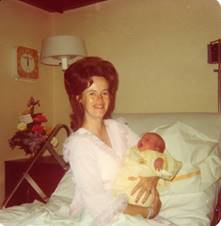
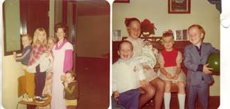

Chapter 25 – SCOTT LEON BROWNING

Scott was born while we lived in our 2nd home, when we moved to Arizona the first time. Scott is our "Arizona" baby. He was our only child who was born outside of Utah. Prior to his birth, all the children had had the Chicken Pox. Sandi had gone to the Father and Daughter Party and came home sick. The next morning, she was really sick and soon broke out with the Chicken Pox. She had had it before and I didn't think you could get it twice, but you can and the 2nd time is a lot worse. I felt so sorry for her as she ran a high fever and had chicken pox all over her body, between her toes, down her throat, everywhere and was really sick. Shellie got them next and then both Mike and David. I was hoping not to bring a new baby home to the chicken pox, plus I didn't want to leave the children when they were sick to go to the hospital. In those days, they kept us in the hospital for at least three days and usually four. Thankfully, they got over them just before Scott was born.
That hospital experience was awful. As far as the birth was concerned it went fine, but they had had a bomb scare at that hospital "The Good Samaritan Hospital" and so they had to check my suitcase, purse, etc., as I was admitted. When they took me to my room, it was terribly hot. We tried to open the door onto the patio, but it was locked. Ken went to see about getting it unlocked, but they told us that because of security, they had to stay locked. The thermostat didn't work in my room and I was so hot and uncomfortable. Ken tried to stuff up cardboard into the heat vent to shut off some of the heat. He complained to the nurses and doctors and they said they would have someone come look at it, but no one ever came. I would have to put cold wash cloths on my face and drink lots of ice water, but it was still so miserable. I only stayed the minimum of time I had to, as I wanted to go home and be able to get some rest.
Scott was a cute baby and very alert and strong. The nurse said "if he doesn't turn out to be a football player, I'll be surprised as he holds his head up so straight and is so strong". He was my biggest baby - almost 9 lbs. He was a contented, happy baby. Back at home, Ken's mom & Leo came to help me and also my Mom came. I've always had trouble getting my milk to come in good at first, so I eat lots of corn. Someone told me that help the milk come in good. I also drank a lot of water and hot postum. They said "hot" drinks helped. After my milk was established, I was fine and so was the baby, it was just getting it to come in, was the problem. At night after we put the children down to bed, the five of us adults would play "rummy". I would fix a cup of postum to drink and asked if any of them would like some. They said "no". I got out some ginger snap cookies and started dipping them in my postom. They said "that looks good" - so I fixed them cups of postom and put the ginger snaps on the table. They really liked it - so each evening we would play "rummy" and drink postom and dip ginger snaps in it. I still like postom with ginger snaps and it reminds me of those good evenings with our parents. We didn’t name Scott after anyone, we just liked those names, but a member of our ward, whose name was Leon, thought we had named our baby after him and he thought he was Scott’s Godfather. He was excited about this. We didn’t tell him different.
We are very thankful for our little Scott. He is now 18 months old. One thing I’d like to note about him is that he started whistling when he was fifteen months old. (I thought he was younger than 15 months and have been saying that he was, and he might have been.) Scott started whistling in church in Sunset. He was whistling and everyone was looking around to see who was doing it, as it was a strong loud whistle. I was trying to stuff soda crackers and cheerios into his mouth to keep him from whistling. After church the little widows who were sitting in back of us said “Was that your baby who was whistling?” They thought it sounded like it was coming from him, but couldn’t believe that it was. Teenagers came up and were amazed that it was Scott who had been whistling. .He would whistle as he walked around the house, and has whistled every since. We call him “The Happy Little Whistler”. We had a cat in Arizona who would play in its cat house, that Ken built, and would swipe at us with his paws & scratch us, but if Scott would be there, he would play carefully with him and never hurt him. Guess he had that instinct that Scott was a baby and he played so good with him.